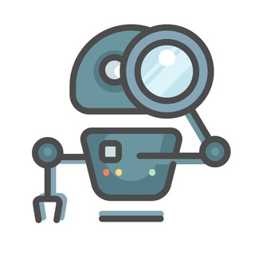

Robotics Channel, robotics_channel on TGViewer

Robotics Channel
t.me/robotics_channel
Мир робототехники, искусственного разума и сфер их применения.
Сайт the-robot.ru
Чат @robotics_chat
Книги @robotics_books
Вакансии @robotics_job
Бот-ассистент + о рекламе @robotics_bot
Админы @MaximKosterin и @Vintego
Сайт the-robot.ru
Чат @robotics_chat
Книги @robotics_books
Вакансии @robotics_job
Бот-ассистент + о рекламе @robotics_bot
Админы @MaximKosterin и @Vintego